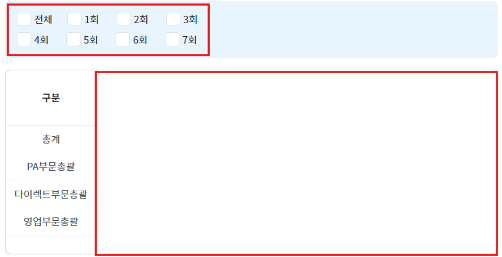
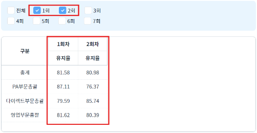
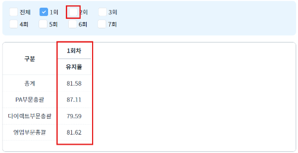
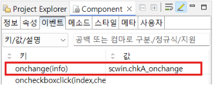
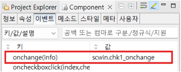
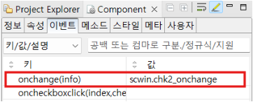

Checkbox와 GridView를 연동하여 조회하는 예제입니다.
체크된 항목을 gridView에 나타내기
1
STEP 1: 초기 상태를 확인합니다.
Checkbox에 항목이 선택되어 있지 않고, GridView에 데이터가 표시되지 않습니다.
Image 1.브라우저(Chrome) 실행 예시

2
STEP 2: Checkbox에서 항목을 선택합니다.
선택된 항목이 GridView에 나타납니다.
Image 2.브라우저(Chrome) 실행 예시

3
STEP 3: Checkbox에서 선택된 항목을 해제합니다.
해제한 항목의 데이터가 사라집니다.
Image 3.브라우저(Chrome) 실행 예시

1
STEP 1: Checkbox에 onchange 이벤트 함수를 적용합니다.
예제 파일에서는 핸들러로 사용할 메소드명을 다음과 같이 정의하였습니다.
아래는 순서대로 각각의 checkBox에 이벤트를 적용한 예시입니다.
'전체' 항목이 있는 checkBox
'1회, 2회, 3회' 항목이 있는 checkBox
'4회, 5회, 6회, 7회' 항목이 있는 checkBox
Image 4.웹스퀘어 스튜디오의 Component View - 이벤트 설정 예시

Image 5.웹스퀘어 스튜디오의 Component View - 이벤트 설정 예시

Image 6.웹스퀘어 스튜디오의 Component View - 이벤트 설정 예시

Example 1.Script
//예제 파일에서는 스크립트의 'scwin.chk1_onchange','scwin.chk2_onchange', 'scwin.chkA_onchange'에 작성되어 있습니다. scwin.chk1_onchange = function(info) { // '전체' 항목 체크 해제 chkA.checkAll(false); scwin.chk("1"); }; scwin.chk2_onchange = function(info) { // '전체' 항목 체크 해제 chkA.checkAll(false); scwin.chk("2"); }; scwin.chkA_onchange = function(info) { if ( chk1.getDisabled()){ return; } if (info.newValue == "") { chk1.checkAll(false); chk2.checkAll(false); } else { chk1.checkAll(true); chk2.checkAll(true); } scwin.chk("1"); scwin.chk("2"); };
2
STEP 2: 체크된 항목을 GridView에 표시합니다.
GridView의 'setColumnVisible' 메소드를 사용해 컬럼의 표시 여부를 설정합니다.
Example 2.Script
//예제 파일에서는 스크립트의 'scwin.chk()'에 작성되어 있습니다. scwin.chk = function (type) { var chkValue = ""; var chkItem = []; if ( type == "1" ) { chkItem = [ { label: "1회", value: "02" }, { label: "2회", value: "03" }, { label: "3회", value: "04" } ]; // 체크된 항목의 value 값 chkValue = chk1.getValue(); } else if ( type == "2") { chkItem = [ { label: "4회", value: "05" }, { label: "5회", value: "06" }, { label: "6회", value: "07" }, { label: "7회", value: "08" } ]; // 체크된 항목의 value 값 chkValue = chk2.getValue(); } for (var i = 0; i < chkItem.length ; i++){ var flag = false; if ( chkValue.indexOf(chkItem[i].value) > -1 ) { flag = true; } // Checkbox에 체크된 항목에 대해 컬럼 표시 여부를 설정 grd_Exam.setColumnVisible("col"+chkItem[i].value, flag); } };
onchange
setColumnVisible(columnInfo, columnVisible)